2 Exploratory Data Analysis
2.1 Objectives
- Load, merge and clean data sets
- Explore data sets
- Conduct basic descriptive data analysis
- Understand and visualize the distribution of variables
- Understand and visualize the relationship between variables
2.2 R functions covered this week
- Importing and saving data
read_csv(): reads acsvfile into a data frameread_excel(): reads an Excel file into a data frame.load(): loads anRDatafile into the current session.save(): saves objects from the current session as aRDatafile
- Handling data
str(): displays the structure of an object.merge(): combines two data frames into one.na.omit(): removes missing values from a data frame.rm(): removes objects from the current session.
dplyrverbs for data wranglingas_tibble(),select(),filter(),rename(),mutate(),case_when(),group_by(),ungroup(),summarise()
ggplot(): creates a plot using the grammar of graphics.geom_boxplot(),geom_histogram(),geom_density(),geom_point(),geom_smooth()
- Producing descriptive statistics and summaries
table(): creates a contingency table of counts for categorical variables.summary(): produces a summary of an object, including its mean, median, quartiles, etc.skim(): provides a summary of the whole dataset with various statistics and types of variables.DataExplorerfunctions that return information on the data set and descriptive statistics.introduce(),plot_intro(),plot_missing(),plot_bar()tbl_summary(): creates a summary table for descriptive statistics of variables in a data frame.
- Calculating and plotting correlations
correlate(),rearrange(),shave(),fashion()cor(),ggcorrplot()
2.3 What is EDA and why is it so important?
Exploratory Data Analysis, or EDA for short, is the first step in every data analysis project. Before we can start modelling the relationships in our data, we have to get to know the data set. What variables are included? What are their minimum, maximum and mean values? How are they distributed? What relationships exist between several variables? Etc, etc… EDA helps us with answering these and related questions by using a set of techniques aimed at exploring the data.
But why is this important? Why do we not just throw all variables in our data set into a statistical model, let the computer do the crunching and get the answer to our research question before lunch break? On the technical side, given enough processing power, nothing prevents us from taking this approach. But if our goal is to produce reliable, robust and good science, we can not, or even must not, take this shortcut and rather put in the hours into thorough thinking and learning about our data before even starting to apply all the fancy and powerful statistical methods we will address later in this seminar.
EDA helps us in understanding the data. It is not only important to know which variables are even present but also what their types are and how they are distributed. This is important to know because the choice of model and its appropriateness very much depends on it. Again, in most cases our computer or R will not stop us from building an unreliable or even flat out wrong statistical model. The only way to prevent this is to think and make informed decisions based on our knowledge, experience and understanding of our data. After choosing and building our model we have to check it for problems and assess if we have met all the underlying statistical assumptions. When we return to this at a later point in the seminar, we will again see that understanding our variables and their distributions is necessary to “fine-tune” our regression model and actually produce reliable scientific research results.
EDA is also necessary to make informed decisions on pre-processing and data cleaning. It will be a rare treat indeed to download a data set that includes all variables necessary for modelling in a format that we can use out-of-the-box for our specific research question. We may have to convert variables into different types, recode categories, normalize scales or even construct completely new variables based on the values of others; and this is just a small subset of all the possibly necessary pre-processing steps we may have to apply. There may also be issues in our data. Maybe there are extreme values on some variables that we have to deal with or plain mistakes that were introduced when data set was assembled. Small errors in the data can lead to completely wrong conclusions or even prevent the model from working altogether. As there is no gold standard for pre-processing and data cleaning, we have to understand and explore our data beforehand and again make our own informed decisions.
Moving beyond understanding individual variables and their distributions, another part of EDA is exploring the relationships between multiple variables. How are the values of one variable distributed based on the values of another? Do variables correlate with each other and in which direction? Etc, etc… This again helps us in building a robust model and making informed decisions but may also support the process of hypothesis generation, i.e. finding things that could be interesting to study.
2.4 Importing data into R
Before we can start exploring our data, we first have to load it into R.
In this course, we will use a data set on NBA players compiled by Chris Davis and made available on kaggle.com. You should inspect the documentation for the data set following this link and download both .csv files either directly from the linked page or from the Moodle course accompanying this seminar. Make sure to save the files in your project folder, or a sub-folder thereof.
To import the data, we have to load some packages. Luckily, the tidyverse package, or rather collection of packages, provides all we need here. As a quick reminder, you can install packages using the function install.packages("tidyverse").
Now, let us import the data. You can see in the folder that we have 2 .csv files. To import those, we can use the the read_csv() or the more general read_delim() functions. For other formats we would have to use different functions. Here are some of the more common cases you may encounter. To load .RData files, the native R format, we use the load() function. To import Stata data sets, you can use read_data() from the haven package. Several other packages for specific data formats are also available.
Make sure you name the correct sub-directory in case you saved the data a sub-folder of your project folder (which we have done).
nba_salaries <- read_csv("../datasets/nba/salaries_1985to2018.csv", show_col_types = FALSE)
nba_players <- read_csv("../datasets/nba/players.csv", show_col_types = FALSE)Great, the two data frames should appear in your environment in the upper right side in R studio.
Let us take a quick look at these using the str() function. str() shows us the number of rows (observations) and columns (variables). It also provides information on the name of each column, its type and an example of some of the values in each column.
## spc_tbl_ [4,685 × 25] (S3: spec_tbl_df/tbl_df/tbl/data.frame)
## $ index : num [1:4685] 0 1 2 3 4 5 6 7 8 9 ...
## $ _id : chr [1:4685] "abdelal01" "abdulza01" "abdulka01" "abdulma02" ...
## $ birthDate : chr [1:4685] "June 24, 1968" "April 7, 1946" "April 16, 1947" "March 9, 1969" ...
## $ birthPlace : chr [1:4685] "Cairo, Egypt" "Brooklyn, New York" "New York, New York" "Gulfport, Mississippi" ...
## $ career_AST : num [1:4685] 0.3 1.2 3.6 3.5 1.1 2.5 1.2 1 0.7 0.5 ...
## $ career_FG% : chr [1:4685] "50.2" "42.8" "55.9" "44.2" ...
## $ career_FG3%: chr [1:4685] "0.0" NA "5.6" "35.4" ...
## $ career_FT% : chr [1:4685] "70.1" "72.8" "72.1" "90.5" ...
## $ career_G : num [1:4685] 256 505 1560 586 236 830 319 1 56 174 ...
## $ career_PER : chr [1:4685] "13.0" "15.1" "24.6" "15.4" ...
## $ career_PTS : num [1:4685] 5.7 9 24.6 14.6 7.8 18.1 5.6 0 9.5 5.3 ...
## $ career_TRB : chr [1:4685] "3.3" "8.0" "11.2" "1.9" ...
## $ career_WS : num [1:4685] 4.8 17.5 273.4 25.2 3.5 ...
## $ career_eFG%: chr [1:4685] "50.2" NA "55.9" "47.2" ...
## $ college : chr [1:4685] "Duke University" "Iowa State University" "University of California, Los Angeles" "Louisiana State University" ...
## $ draft_pick : chr [1:4685] "25th overall" "5th overall" "1st overall" "3rd overall" ...
## $ draft_round: chr [1:4685] "1st round" "1st round" "1st round" "1st round" ...
## $ draft_team : chr [1:4685] "Portland Trail Blazers" "Cincinnati Royals" "Milwaukee Bucks" "Denver Nuggets" ...
## $ draft_year : chr [1:4685] "1990" "1968" "1969" "1990" ...
## $ height : chr [1:4685] "6-10" "6-9" "7-2" "6-1" ...
## $ highSchool : chr [1:4685] "Bloomfield in Bloomfield, New Jersey" "John Jay in Brooklyn, New York" "Power Memorial in New York, New York" "Gulfport in Gulfport, Mississippi" ...
## $ name : chr [1:4685] "Alaa Abdelnaby" "Zaid Abdul-Aziz" "Kareem Abdul-Jabbar" "Mahmoud Abdul-Rauf" ...
## $ position : chr [1:4685] "Power Forward" "Power Forward and Center" "Center" "Point Guard" ...
## $ shoots : chr [1:4685] "Right" "Right" "Right" "Right" ...
## $ weight : chr [1:4685] "240lb" "235lb" "225lb" "162lb" ...
## - attr(*, "spec")=
## .. cols(
## .. index = col_double(),
## .. `_id` = col_character(),
## .. birthDate = col_character(),
## .. birthPlace = col_character(),
## .. career_AST = col_double(),
## .. `career_FG%` = col_character(),
## .. `career_FG3%` = col_character(),
## .. `career_FT%` = col_character(),
## .. career_G = col_double(),
## .. career_PER = col_character(),
## .. career_PTS = col_double(),
## .. career_TRB = col_character(),
## .. career_WS = col_double(),
## .. `career_eFG%` = col_character(),
## .. college = col_character(),
## .. draft_pick = col_character(),
## .. draft_round = col_character(),
## .. draft_team = col_character(),
## .. draft_year = col_character(),
## .. height = col_character(),
## .. highSchool = col_character(),
## .. name = col_character(),
## .. position = col_character(),
## .. shoots = col_character(),
## .. weight = col_character()
## .. )
## - attr(*, "problems")=<externalptr>## spc_tbl_ [14,163 × 8] (S3: spec_tbl_df/tbl_df/tbl/data.frame)
## $ index : num [1:14163] 0 1 2 3 4 5 6 7 8 9 ...
## $ league : chr [1:14163] "NBA" "NBA" "NBA" "NBA" ...
## $ player_id : chr [1:14163] "abdelal01" "abdelal01" "abdelal01" "abdelal01" ...
## $ salary : num [1:14163] 395000 494000 500000 805000 650000 1530000 2030000 2000000 3000000 1660000 ...
## $ season : chr [1:14163] "1990-91" "1991-92" "1992-93" "1993-94" ...
## $ season_end : num [1:14163] 1991 1992 1993 1994 1995 ...
## $ season_start: num [1:14163] 1990 1991 1992 1993 1994 ...
## $ team : chr [1:14163] "Portland Trail Blazers" "Portland Trail Blazers" "Boston Celtics" "Boston Celtics" ...
## - attr(*, "spec")=
## .. cols(
## .. index = col_double(),
## .. league = col_character(),
## .. player_id = col_character(),
## .. salary = col_double(),
## .. season = col_character(),
## .. season_end = col_double(),
## .. season_start = col_double(),
## .. team = col_character()
## .. )
## - attr(*, "problems")=<externalptr>We see that most variables already use the correct type, automatically picked by read_csv() based on the data is sees when importing. Text variables are chr for character; Numeric variables are num. It is very important that you understand the types of variables that R uses. If you need a refresher, go here.
2.4.1 Merge datasets
We see that nba_salaries contains the salaries of players for various seasons. players contains many career statistics about players, for example, how many points they scored on average per game, across their whole career.
Now we want to link both data sets. We can do this using the merge() function. An alternative would be *_join().
2.5 Clean dataset
We can use the select() function to kick out columns and the filter() function to kick out rows. First, we need to look at the codebook and the questionnaire to understand the what each variable refers to (see the file data_description.txt).
Let us start by removing some variables of which we are already sure we will not use and reducing the data set to more recent observations. We should also rename our _id variable to a name that is compliant with the R naming conventions. At the same time we convert the data frame into a tibble. This is not necessary and will not have any impact on the results but we can benefit from the much nicer printing into the console.
data_nba <- data_nba %>%
select(-index.x, -index.y, -league, -highSchool) %>%
filter(season_start >= 1998) %>%
rename(id = "_id") %>%
as_tibble()2.5.1 Mutating variables
Let us do some additional data cleaning.
First, we want to calculate each players’ age at the beginning of each season. Currently, we only have the date of birth and the year for each season.
data_nba <- data_nba %>%
mutate(year_of_birth = year(mdy(birthDate)),
age = season_start - year_of_birth)Second, we want recode the position variable. Some players played multiple position, so that info is messy. We want to create dummy variables for each position.
##
## Center
## 1204
## Center and Power Forward
## 686
## Center and Power Forward and Small Forward
## 3
## Center and Small Forward and Power Forward
## 30
## Point Guard
## 1162
## Point Guard and Power Forward and Small Forward and Shooting Guard
## 5
## Point Guard and Shooting Guard
## 573
## Point Guard and Shooting Guard and Small Forward
## 13
## Point Guard and Small Forward
## 3
## Point Guard and Small Forward and Shooting Guard
## 21
## Power Forward
## 667
## Power Forward and Center
## 884
## Power Forward and Center and Small Forward
## 51
## Power Forward and Shooting Guard
## 14
## Power Forward and Shooting Guard and Small Forward
## 31
## Power Forward and Small Forward
## 418
## Power Forward and Small Forward and Center
## 3
## Power Forward and Small Forward and Shooting Guard
## 11
## Shooting Guard
## 735
## Shooting Guard and Point Guard
## 581
## Shooting Guard and Point Guard and Small Forward
## 17
## Shooting Guard and Power Forward and Small Forward
## 25
## Shooting Guard and Small Forward
## 592
## Shooting Guard and Small Forward and Point Guard
## 73
## Shooting Guard and Small Forward and Power Forward
## 25
## Small Forward
## 620
## Small Forward and Center
## 4
## Small Forward and Center and Power Forward
## 72
## Small Forward and Point Guard and Shooting Guard
## 19
## Small Forward and Power Forward
## 425
## Small Forward and Power Forward and Center
## 49
## Small Forward and Power Forward and Shooting Guard
## 33
## Small Forward and Shooting Guard
## 588
## Small Forward and Shooting Guard and Point Guard
## 22
## Small Forward and Shooting Guard and Power Forward
## 69data_nba <- data_nba %>%
mutate(
position_center =
case_when(position = str_detect(position,"Center") ~ 1,
TRUE ~ 0),
position_sf =
case_when(position = str_detect(position,"Small Forward") ~ 1,
TRUE ~ 0),
position_pf =
case_when(position = str_detect(position,"Power Forward") ~ 1,
TRUE ~ 0),
position_sg =
case_when(position = str_detect(position,"Shooting Guard") ~ 1,
TRUE ~ 0),
position_pg =
case_when(position = str_detect(position,"Point Guard") ~ 1,
TRUE ~ 0))Now we want to create a variable that gives us the number of seasons (i.e. years) that each player played in the NBA. Since the data set is organized in seasons, each row is one season. Counting the rows per player gives us the years they played.
Almost done. When we browse the data set, we recognize that the height and weight variables are stored as characters. Let’s convert them to numeric, so we can use them in computations.
## chr [1:9728] "162lb" "223lb" "223lb" "223lb" "223lb" "223lb" "223lb" ...## chr [1:9728] "6-1" "6-6" "6-6" "6-6" "6-6" "6-6" "6-6" "6-6" "6-6" "6-6" ...data_nba <- data_nba %>%
mutate(weight = str_replace(weight, "lb", ""),
weight = as.numeric(weight),
height = str_replace(height, "-", "."),
height = as.numeric(height)
)
str(data_nba$weight)## num [1:9728] 162 223 223 223 223 223 223 223 223 223 ...## num [1:9728] 6.1 6.6 6.6 6.6 6.6 6.6 6.6 6.6 6.6 6.6 ...Now we again use select() to remove some unneeded variables and at the same time reorder the remaining ones before applying save() to store the cleaned data as a .Rdata file. This way we can simply load the resulting data set the next time around and spare ourselves from repeating the pre-processing each session.
2.6 Explore the complete dataset
Now, let us look at some packages which help us in exploring the data set as a whole. Let’s start with the skimr package:
## ── Data Summary ────────────────────────
## Values
## Name data_nba
## Number of rows 9728
## Number of columns 33
## _______________________
## Column type frequency:
## character 17
## numeric 16
## ________________________
## Group variables None
##
## ── Variable type: character ────────────────────────────────────────────────────
## skim_variable n_missing complete_rate min max empty n_unique whitespace
## 1 id 0 1 6 9 0 1794 0
## 2 name 0 1 4 24 0 1790 0
## 3 birthPlace 0 1 5 44 0 849 0
## 4 career_FG% 0 1 1 5 0 333 0
## 5 career_FG3% 0 1 1 5 0 297 0
## 6 career_FT% 0 1 1 5 0 413 0
## 7 career_PER 0 1 1 5 0 274 0
## 8 career_TRB 0 1 3 4 0 113 0
## 9 career_eFG% 0 1 1 5 0 310 0
## 10 college 1541 0.842 6 89 0 379 0
## 11 draft_pick 1542 0.841 11 13 0 66 0
## 12 draft_round 1542 0.841 9 9 0 5 0
## 13 draft_team 1542 0.841 9 33 0 39 0
## 14 draft_year 1542 0.841 4 4 0 38 0
## 15 shoots 0 1 4 10 0 3 0
## 16 season 0 1 7 7 0 20 0
## 17 team 0 1 9 33 0 36 0
##
## ── Variable type: numeric ──────────────────────────────────────────────────────
## skim_variable n_missing complete_rate mean sd p0
## 1 age 0 1 27.0 4.46 18
## 2 weight 0 1 221. 27.7 135
## 3 height 0 1 6.51 0.380 5.1
## 4 career_AST 0 1 1.94 1.66 0
## 5 career_G 0 1 569. 347. 1
## 6 career_PTS 0 1 8.91 5.08 0
## 7 career_WS 0 1 33.4 37.1 -2.4
## 8 salary 0 1 4072633. 4669737. 2706
## 9 season_end 0 1 2009. 5.83 1999
## 10 season_start 0 1 2008. 5.83 1998
## 11 position_center 0 1 0.307 0.461 0
## 12 position_sf 0 1 0.331 0.471 0
## 13 position_pf 0 1 0.360 0.480 0
## 14 position_sg 0 1 0.354 0.478 0
## 15 position_pg 0 1 0.256 0.436 0
## 16 seasons_played 0 1 8.76 4.62 1
## p25 p50 p75 p100 hist
## 1 23 26 30 42 ▃▇▅▂▁
## 2 200 220 240 360 ▁▇▆▁▁
## 3 6.11 6.6 6.8 7.7 ▁▅▆▇▁
## 4 0.7 1.4 2.7 10.5 ▇▃▁▁▁
## 5 281 564 827 1522 ▇▇▇▃▁
## 6 5.1 8 12 30.1 ▆▇▃▁▁
## 7 6.4 22.2 48.3 235. ▇▂▁▁▁
## 8 947907 2240000 5408700 34682550 ▇▁▁▁▁
## 9 2004 2009 2014 2018 ▇▇▇▇▇
## 10 2003 2008 2013 2017 ▇▇▇▇▇
## 11 0 0 1 1 ▇▁▁▁▃
## 12 0 0 1 1 ▇▁▁▁▃
## 13 0 0 1 1 ▇▁▁▁▅
## 14 0 0 1 1 ▇▁▁▁▅
## 15 0 0 1 1 ▇▁▁▁▃
## 16 5 9 12 21 ▇▇▇▃▁The skim() function provides a very handy overview of the whole data set including the types of columns (i.e. variables), a summary of all variables, the extent of missing data etc. One advantage is that the output is tidy which means it is easy to work with further if needed, for example to plot the resulting summary.
An alternative is the DataExplorer package. It is useful to get a graphical overview of variables and the missingness of data.
## # A tibble: 1 × 9
## rows columns discrete_columns continuous_columns all_missing_columns
## <int> <int> <int> <int> <int>
## 1 9728 33 17 16 0
## # ℹ 4 more variables: total_missing_values <int>, complete_rows <int>,
## # total_observations <int>, memory_usage <dbl>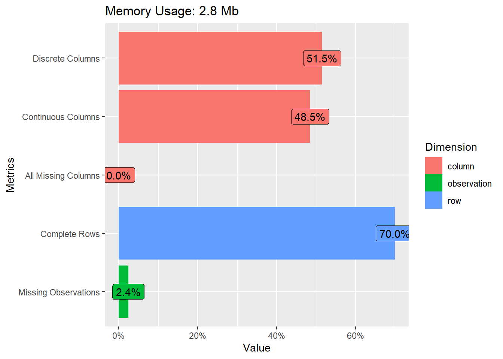
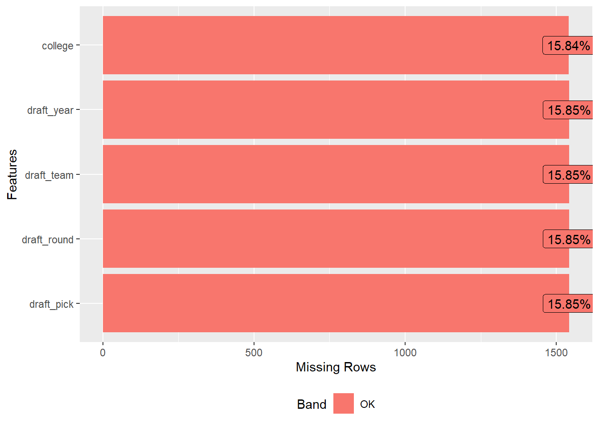
# plots frequencies across variables (here for a selected subset)
data_nba %>%
select(shoots, contains("position")) %>%
plot_bar()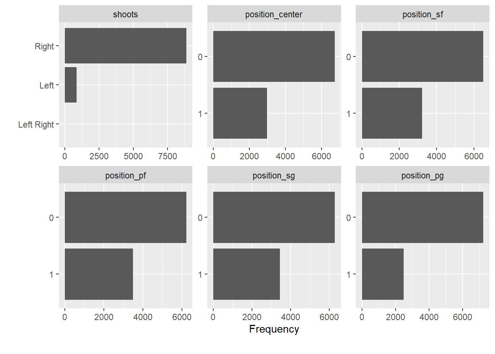
Now, let us try gtSummary for summary tables. A summary table is always a useful start, once you have identified the variables you are interested in.
Let us assume we are interested in age, seasons_played, shoots (shooting hand), career_PTS (career points), salary and position.
library(gtsummary)
data_nba %>%
select(age, seasons_played, shoots, career_PTS, salary, contains("position")) %>%
tbl_summary(
statistic = all_continuous() ~ c("{mean} ({min}, {max})")) | Characteristic | N = 9,7281 |
|---|---|
| age | 27.0 (18.0, 42.0) |
| seasons_played | 9 (1, 21) |
| shoots | |
| Left | 856 (8.8%) |
| Left Right | 7 (<0.1%) |
| Right | 8,865 (91%) |
| career_PTS | 8.9 (0.0, 30.1) |
| salary | 4,072,633 (2,706, 34,682,550) |
| position_center | 2,986 (31%) |
| position_sf | 3,222 (33%) |
| position_pf | 3,501 (36%) |
| position_sg | 3,447 (35%) |
| position_pg | 2,489 (26%) |
| 1 Mean (Range); n (%) | |
To explore correlations between all numeric variables in the data set, we can inspect the correlation matrix or plot it.
# selct only numeric variables and remove missing values
data_nba_numeric <- data_nba %>%
select(where(is.numeric)) %>%
na.omit()
# as a matrix using the corrr package
library("corrr")
corrmatrix <- data_nba_numeric %>%
correlate() %>% # create correlation data frame (cor_df)
rearrange() %>% # rearrange by correlations
shave() # remove the upper triangle of the matrix
fashion(corrmatrix) # gives a clean display of the matrix## term career_AST position_pg career_PTS career_G career_WS
## 1 career_AST
## 2 position_pg .61
## 3 career_PTS .61 .08
## 4 career_G .47 .04 .65
## 5 career_WS .52 -.01 .76 .83
## 6 seasons_played .33 .04 .48 .79 .61
## 7 position_sg .19 .22 .12 .09 .01
## 8 salary .35 -.04 .60 .48 .59
## 9 age .18 .03 .18 .49 .36
## 10 position_sf -.08 -.33 .12 .13 .07
## 11 season_end .01 .01 .04 -.17 -.09
## 12 season_start .01 .01 .04 -.17 -.09
## 13 height -.31 -.46 -.01 -.02 -.00
## 14 position_pf -.29 -.44 .01 .11 .12
## 15 position_center -.36 -.39 -.10 .04 .08
## 16 weight -.49 -.66 -.06 -.03 .05
## seasons_played position_sg salary age position_sf season_end season_start
## 1
## 2
## 3
## 4
## 5
## 6
## 7 .09
## 8 .41 -.03
## 9 .26 .03 .25
## 10 .12 .18 .03 .03
## 11 .00 .02 .16 -.07 -.04
## 12 .00 .02 .16 -.07 -.04 1.00
## 13 -.03 -.03 .03 -.04 .30 .02 .02
## 14 .12 -.46 .09 .03 .04 -.00 -.00
## 15 .07 -.49 .10 .04 -.37 -.06 -.06
## 16 .04 -.43 .12 -.07 -.01 .04 .04
## height position_pf position_center weight
## 1
## 2
## 3
## 4
## 5
## 6
## 7
## 8
## 9
## 10
## 11
## 12
## 13
## 14 .15
## 15 .12 .33
## 16 .41 .45 .66# or plot it using a ggplot approach
library("ggcorrplot")
corrmatrix <- round(cor(data_nba_numeric), 1) # create correlation matrix
ggcorrplot(corrmatrix,
method = "circle",
type="lower") # plots the matrix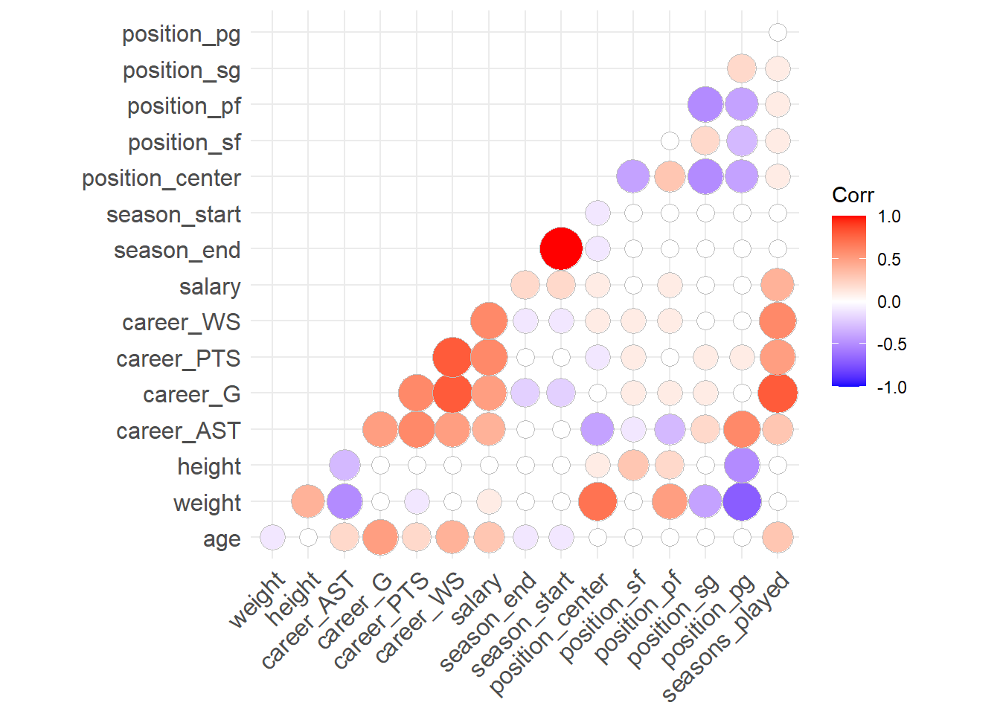
This is interesting. For example, it seems that the weight is strongly correlated with the position a player occupies. Centers are heavy, point guards are light weights. We also see that most performance metrics (career_*) are correlated with each other and also with salary. Good players seem to be good in many things, and good players seem to be paid more.
2.7 Explore individual variables
Now that we have a feeling for the whole data set, we want to explore individual variables. To keep it focused, we will follow up on the question of whether players that perform better are also paid more, for now limiting ourselves to the relationship between the average points per game and the received salary. We will also explore if this relationship depends on the position a player occupies.
Why might the position be relevant for this? We can expect that the justification for the salary differs by the occupied position, i.e. the role a player fills for the team. To explore this we will limit ourselves to two positions for now, point guards and centers. Point guards are really good passers. Their salary may thus depend more on enabling others to score and not so much on their own point average. Centers on the other hand will mostly be on the receiving end, transforming passes into points. For them their salary may more strongly depend on the actual points they are able to score. This clearly still is an oversimplification of how basketball works but may be a first avenue to approach the relationship between salary and point average.
Let us first build a new variable that discerns between centers, point guards and all other positions and that is easier to work with when comparing the distributions. As we have seen above, there are players that play several positions. We should first check if there are centers who are also point guards, and vice versa. For simple cross tabulations, we can use the base R function table().
##
## 0 1
## 0 4253 2489
## 1 2986 0We can see that there are \(0\) observations for which both variables equal \(1\). This saves us some headaches and we can construct the new variable in a straightforward way.
data_nba <- data_nba %>%
mutate(role = case_when(
position_pg == 1 ~ "pg",
position_center == 1 ~ "center",
TRUE ~ "other"
))Let us start with the salary variable. There are several possible approaches to exploring the distributions of our variables of interest. We could for one use functions like skim() or summary(), but we can also construct a table with some summary statistics of interest ourselves using summarise().
data_nba %>%
summarise(min = min(salary),
p25 = quantile(salary, probs = 0.25),
median = median(salary),
mean = mean(salary),
p75 = quantile(salary, probs = 0.75),
max = max(salary)
)## # A tibble: 1 × 6
## min p25 median mean p75 max
## <dbl> <dbl> <dbl> <dbl> <dbl> <dbl>
## 1 2706 947907 2240000 4072633. 5408700 34682550This already gives us some indication on the distribution of the variable but we may ease the interpretation using plots.
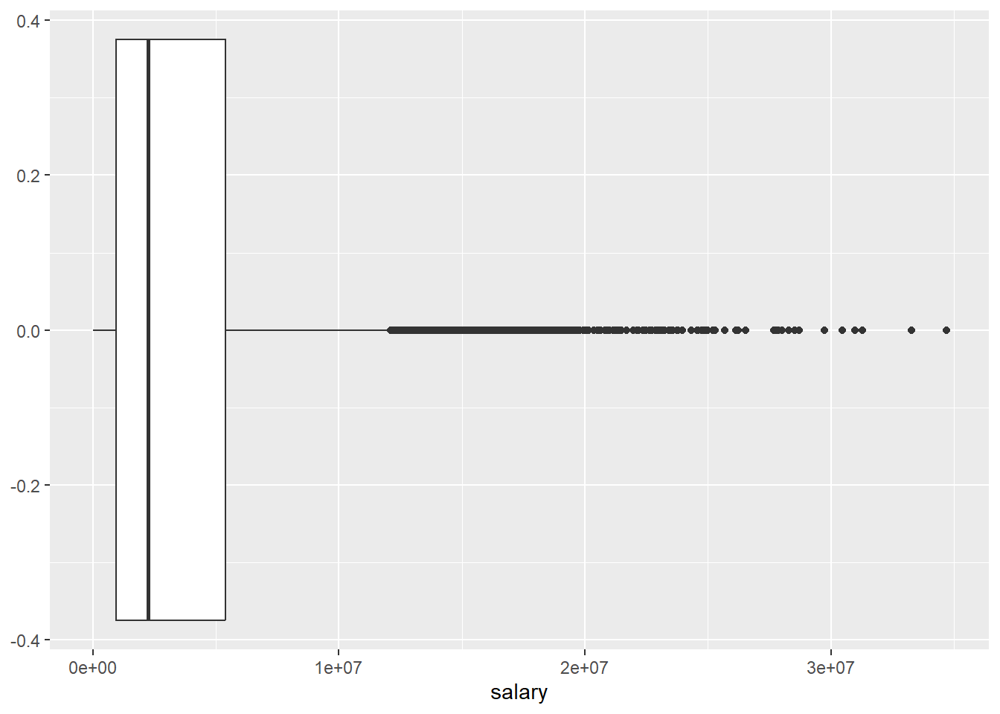
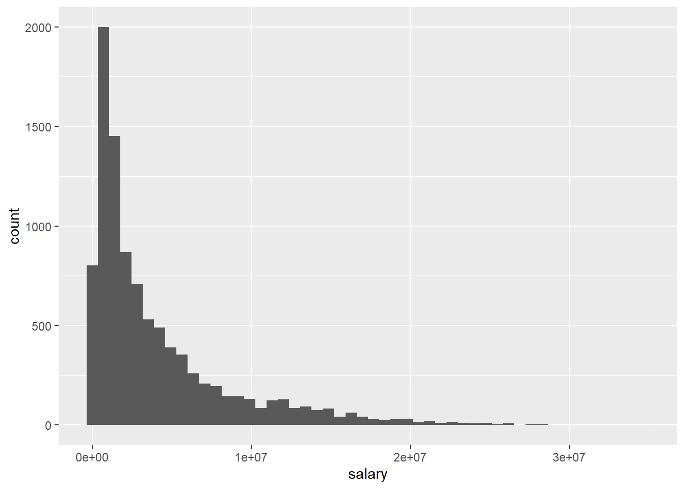
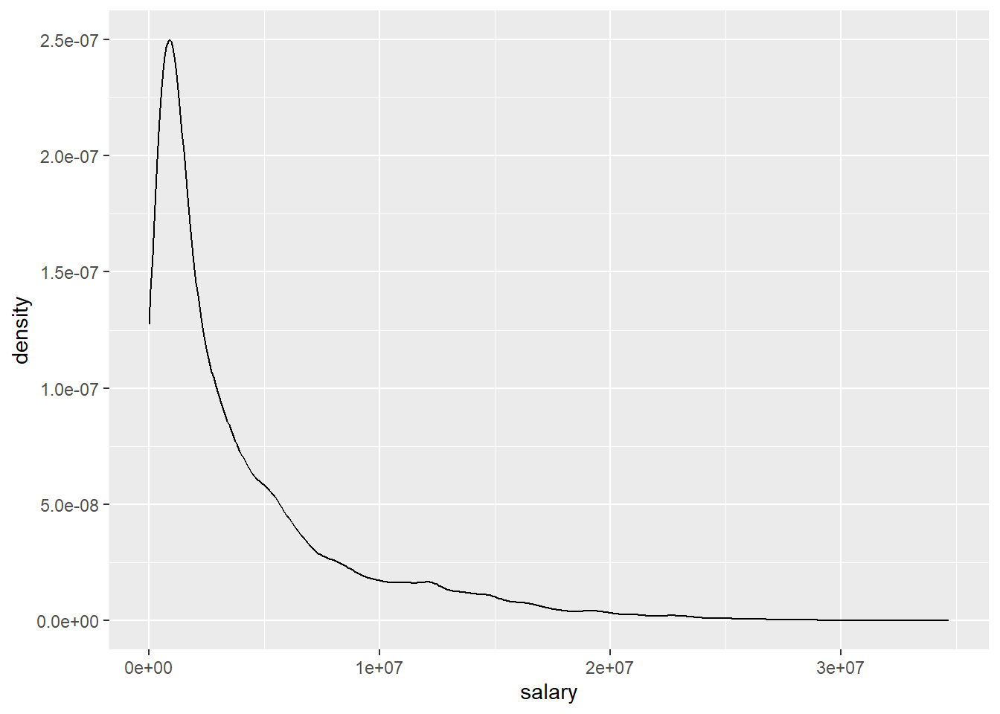
The different approaches to visualizing the distribution for salary basically show us the same thing, the distribution is heavily skewed as we see many players with comparably modest salaries and increasingly few with very high compensations. We should keep this in mind when we turn to building a regression model.
We can also compute and visualize the distribution by the role a player fills. Using summarise() with group_by() enables us to get the same measurements as above, but separately for each category of role.
data_nba %>%
group_by(role) %>%
summarise(min = min(salary),
p25 = quantile(salary, probs = 0.25),
median = median(salary),
mean = mean(salary),
p75 = quantile(salary, probs = 0.75),
max = max(salary)
)## # A tibble: 3 × 7
## role min p25 median mean p75 max
## <chr> <dbl> <dbl> <dbl> <dbl> <dbl> <dbl>
## 1 center 4529 1115340 2880000 4770707. 6400000 28000000
## 2 other 2706 863640 2000000 3757860. 5000000 33285709
## 3 pg 2853 895248 2100000 3773028. 5000000 34682550For plotting by role, let us limit ourselves to boxplots.
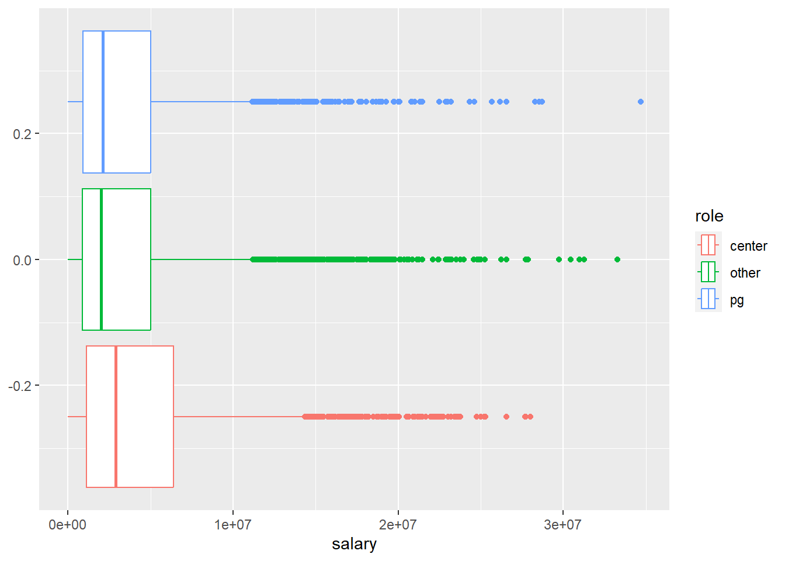
We can see, that while point guards barely differ from their peers, centers do. The average salary for centers is higher compared to all other roles. At the same time while many of them reach very high salaries, the top earner spots are reserved for other roles. The highest earning point guard makes almost \(6,700,000\$\) more compared to the highest earning center; a substantial difference. As the boxplot indicates, the players with such extreme salaries are also in the extreme minority so we should not over interpret this finding. Still, the puzzle seems to be more complex than we thought.
Let us turn to career_PTS now and repeat the analysis from above.
data_nba %>%
summarise(min = min(career_PTS),
p25 = quantile(career_PTS, probs = 0.25),
median = median(career_PTS),
mean = mean(career_PTS),
p75 = quantile(career_PTS, probs = 0.75),
max = max(career_PTS)
)## # A tibble: 1 × 6
## min p25 median mean p75 max
## <dbl> <dbl> <dbl> <dbl> <dbl> <dbl>
## 1 0 5.1 8 8.91 12 30.1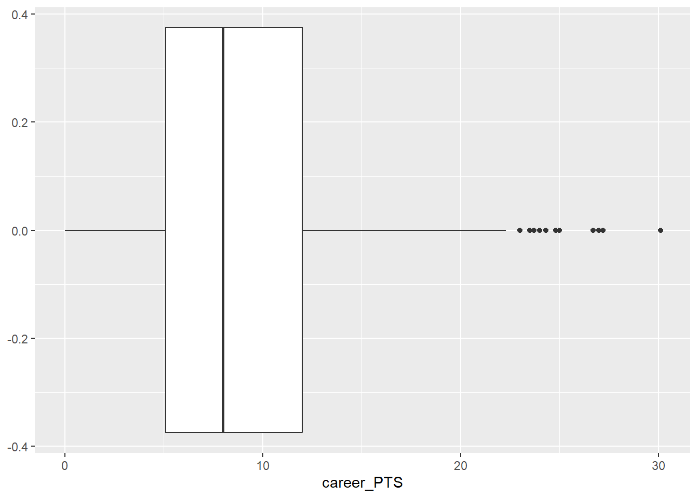
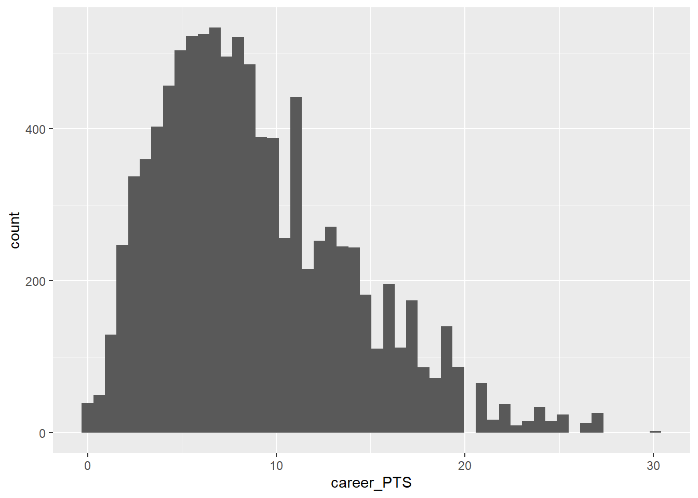
While the distribution of average career points is also somewhat skewed, it is way less so compared to salary.
We should also look at career_PTS by role.
data_nba %>%
group_by(role) %>%
summarise(min = min(career_PTS),
p25 = quantile(career_PTS, probs = 0.25),
median = median(career_PTS),
mean = mean(career_PTS),
p75 = quantile(career_PTS, probs = 0.75),
max = max(career_PTS)
)## # A tibble: 3 × 7
## role min p25 median mean p75 max
## <chr> <dbl> <dbl> <dbl> <dbl> <dbl> <dbl>
## 1 center 0 4.5 7 8.17 11.2 24.3
## 2 other 0 5.2 8.2 9.04 12 30.1
## 3 pg 0 6.3 8.9 9.57 12.6 26.7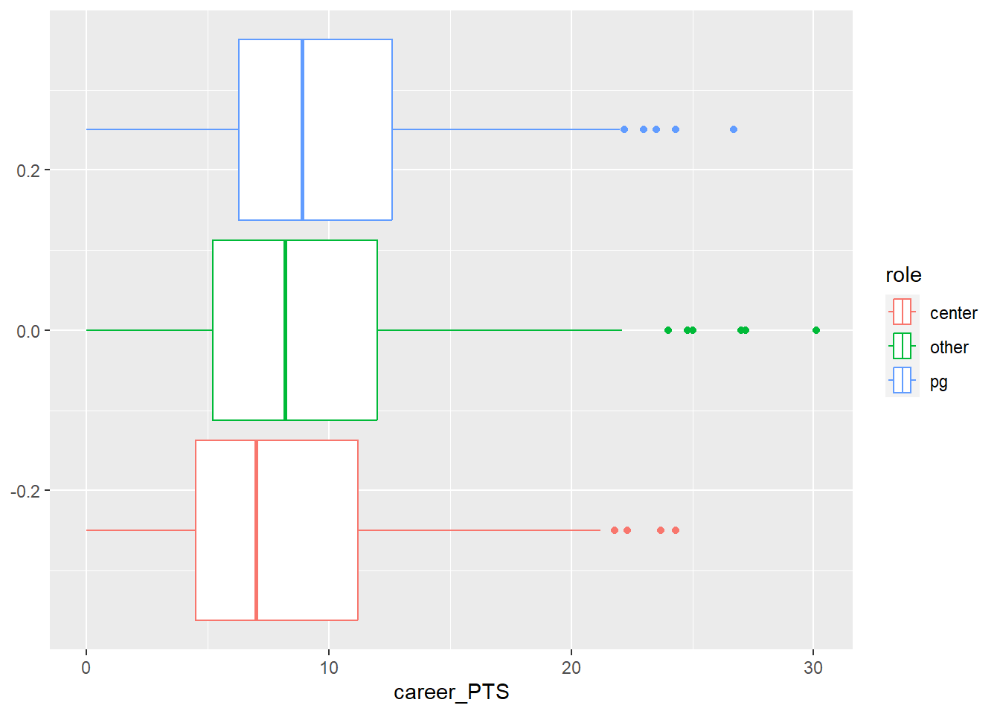
Centers actually make less points on average compared to all other roles and point guards score the highest on average. That is an interesting puzzle to explore. It seems that point guards are paid a little less even though they make a few more points on average. What does this tell us? We can not be sure yet, but it seems that the relationship between points and salary gets translated differently based on the role a player occupies.
Let us now explore this relationship between the two variables, which will be central to our analysis from now on. We can use a scatter plot to inspect the shared distribution of both variables. We also added a line describing the relationship. This actually is a regression line and we will talk about it in detail later, for now let us just accept that the direction of the line tells us how both variables are related.
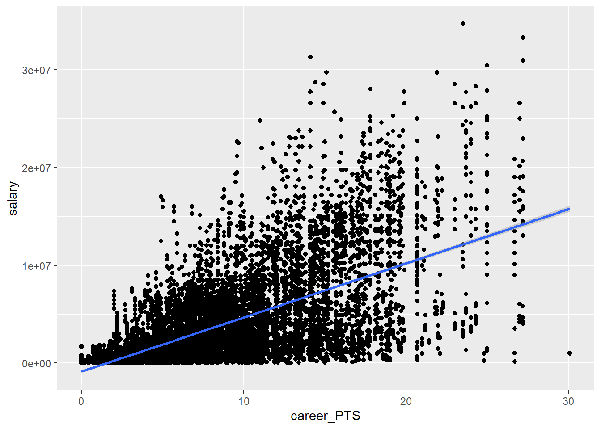
We can see that there is a positive relationship between the average score and the earned salary. The more points a player scores the more he earns, on average.
We can build the same plot by role.
data_nba %>%
ggplot(aes(y = salary, x = career_PTS, colour = role)) +
geom_point(alpha = 0.25) +
geom_smooth(method = "lm")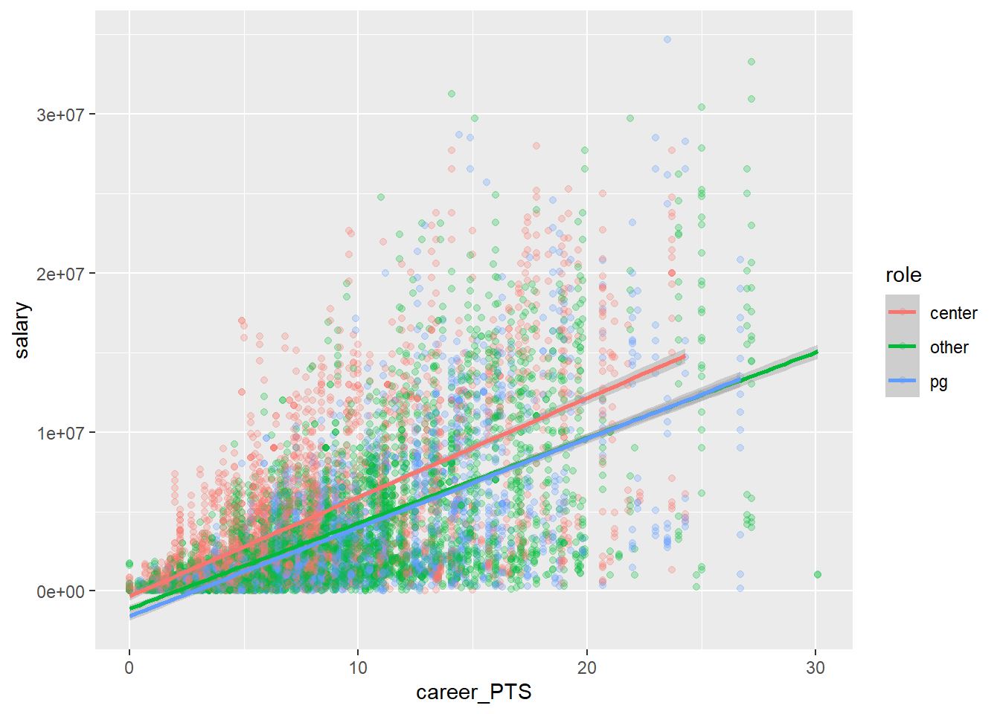
Let’s reflect a moment what we can learn from all this.
First, there seems to be a somewhat linear relationship between how many points a player scores and how much they are paid. This also holds true for point guards just as much as for non-point guards. However, the average salary for point guards is lower in comparison. We also learn that the link between salary and points is stronger for centers as the red line is somewhat steeper. They seem to be paid more, the more they score.
2.8 Moving on
We have now explored our data and gained a better understanding of the variables of interest. We also have identified an interesting puzzle to explre further, and we will pick up on this over the seminar. In week 4, we will construct a theoretical model that tries to explain the relationship between points and salary and in week 8 we will then compute a linear regression model that will hopefully shed some more light on our puzzle. Linear regression is all about further exploring the relationship between two or more variables, one outcome (often called y) and one or multiple independent variables (often called x). Independent variables have many names. They are sometimes called “covariates”; “predictors”; “exposure”, depending on the context.
There are a number of cool things that regression can do for us that simple EDA cannot:
It can model the relationship between two variables while considering simultaneously the potential influence of other factors. Imagine we are interested in the effect of points per game on salary regardless of position, season, team or other independent variables. With regression we can estimate how much more a player would earn every season if he scored 10 more points a game (regardless of other factors as for example the position he plays).
It can assess what explains the effect of one variable on another (i.e. mediation). Maybe we find that point guards earn less and we want to know why. Is it because they score less? Is it because they play less time on average?
It can be used to predict salaries for players for whom we don’t know the salary or even for hypothetical players. We could also look at the performance trend of players and predict whether they earn more next season or not.
We will address all these applications over the course of the seminar.
2.9 Further resources
- Exploratory Data Analysis with R, a book that covers the basics of data visualization, manipulation, and analysis using R and the tidyverse package.
- Exploratory Data Analysis in R with Tidyverse, a guide that shows how to use the tidyverse package to perform common EDA tasks such as importing, cleaning, summarizing, and plotting data.
- Data Visualization with ggplot2, a chapter from the book R for Data Science that explains how to create and customize different types of plots using the ggplot2 package.
- Data Transformation with dplyr, another chapter from the book R for Data Science that demonstrates how to use the dplyr package to manipulate data frames, filter rows, select columns, create new variables, and more.
- Exploratory Data Analysis with R - Bookdown
- How to Perform Exploratory Data Analysis in R (With Example)